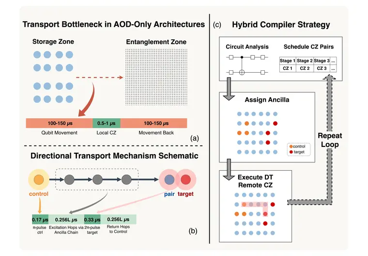

Compiler Framework for Directional Transport in Zoned Neutral-Atom Systems with AOD Assistance: A Hybrid Remote CZ Approach
Paper ↗A compiler and architecture framework combining directional transport with a remote-CZ primitive to reduce entangling latency in zoned neutral-atom systems.